Place the Order
A salesperson opens the Sales app, creates a new quotation, captures customer + products, and saves. The quotation cannot be confirmed yet — confirmation is Phase 2.
Before you start — what must already exist
- A customer profile in Contacts. If the customer is brand-new, an Admin (Sejal / Wesley) must create it first via the Contacts app → New. The customer's status will default to Pending until approved.
- Products with prices, weights and rock-bottom prices set in the Products module.
- Your user must have the Salesperson role (Bhadresh, Byron, Nikhil, Amit, Aboo) or be Admin.
Customer onboarding is a separate procedure. See Sprint 1 User Guide TC 2.0 for the full flow: creating the main profile, adding invoicing-address branches, adding delivery-address contacts, and assigning a credit limit.
Create the quotation
Login as salesperson — Bhadresh, Byron, Nikhil, Amit or Aboo.
Navigate to the Sales app → click New.
Select the customer from the Customer dropdown. The pricelist linked to that customer applies automatically; their default invoicing address and delivery address are inherited from the contact record.
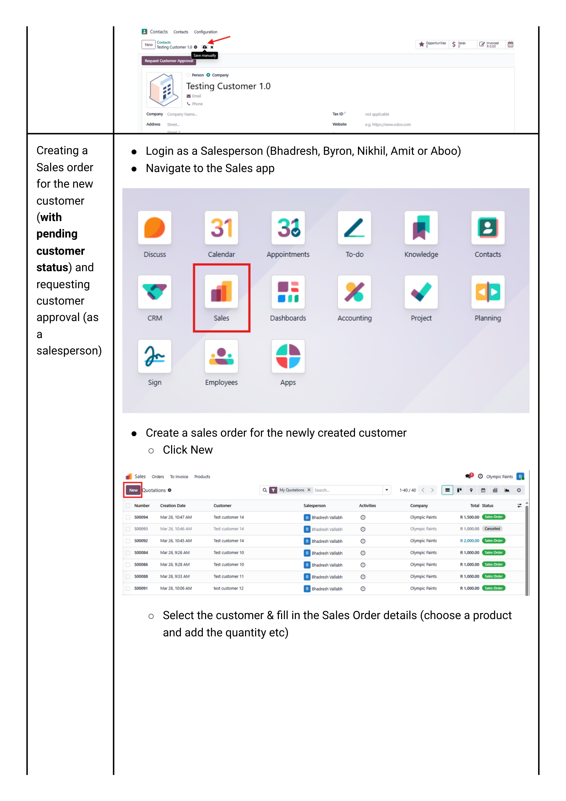
If the customer status is Pending, the Confirm button will not appear. You can save the quotation but cannot proceed until an Admin approves the customer (Phase 1.5 below).
Confirm invoicing & delivery addresses
By default the quotation uses the customer's main address for both invoicing and delivery. To override (common for multi-branch customers):
- Click into the Invoice address field — pick the relevant accounting branch (e.g. "Head Office Accounts").
- Click into the Delivery address field — pick the branch / site that physically receives the goods.
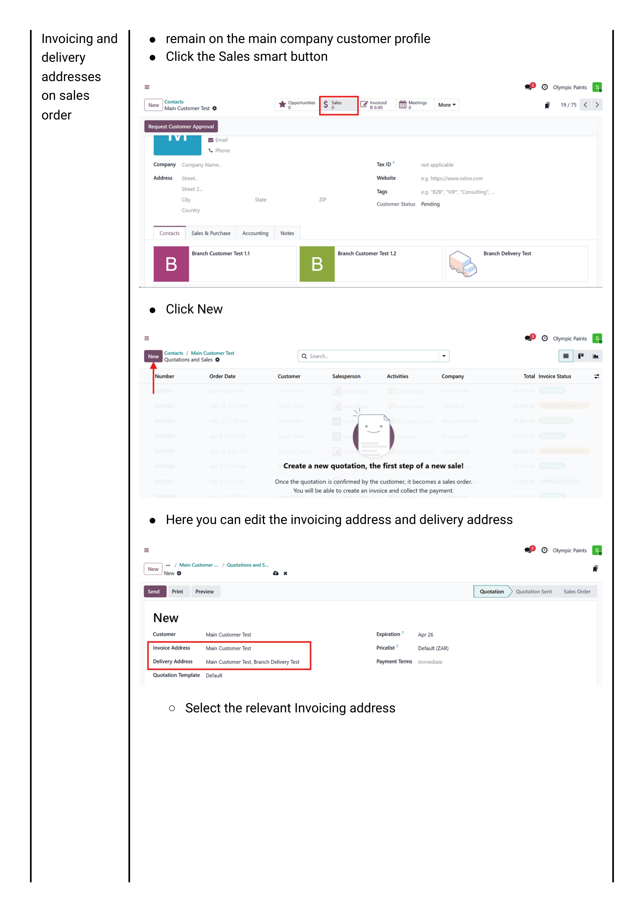
Branches are added as child contacts under the main customer with the address type set to Invoice address or Delivery address. See Sprint 1, pages 17–21.
Add products & quantities
On the Order Lines tab, click Add a product for each item:
- Pick the product from the dropdown.
- Set the Quantity.
- Confirm the Unit Price — the pricelist auto-fills this. Only override it if the customer has a negotiated price.
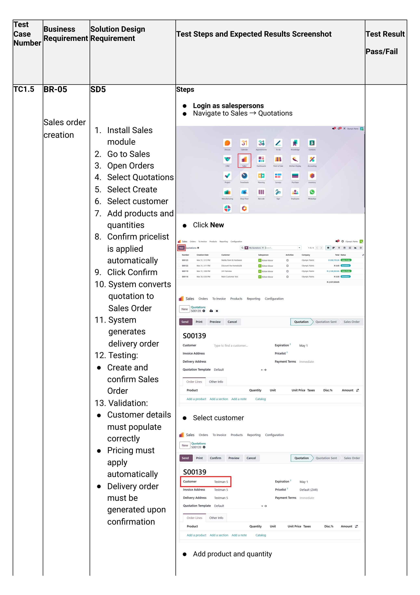
Every product has a rock-bottom price set on the product record. If you discount a line below that floor, the system will block confirmation and trigger a discount-approval activity for the Sales Manager (Kishan). See Phase 1.5 → Discount approval.
Save the quotation
Click Save (the cloud icon). Odoo assigns a SO### reference number.
At this point one of three things happens depending on customer + pricing state:
| State | Result |
|---|---|
| Customer approved, prices ≥ rock-bottom, value within credit limit | Confirm button visible — skip to Phase 2. |
| Customer status = Pending | No Confirm button. Go to Phase 1.5 → Customer approval. |
| Any line below rock-bottom OR total over credit limit | Confirm visible but throws an approval error on click. Go to Phase 1.5. |
Approvals
Three gates can block confirmation: a pending customer, an excess discount, or an over-limit credit balance. Each routes to a different approver.
Approval 1 — Pending customer status
Trigger: Customer's status is Pending at the time of quoting.
How the salesperson raises it: On the quotation, hover the customer name → click the ↗ internal-link arrow → on the customer profile click Request for Approval.
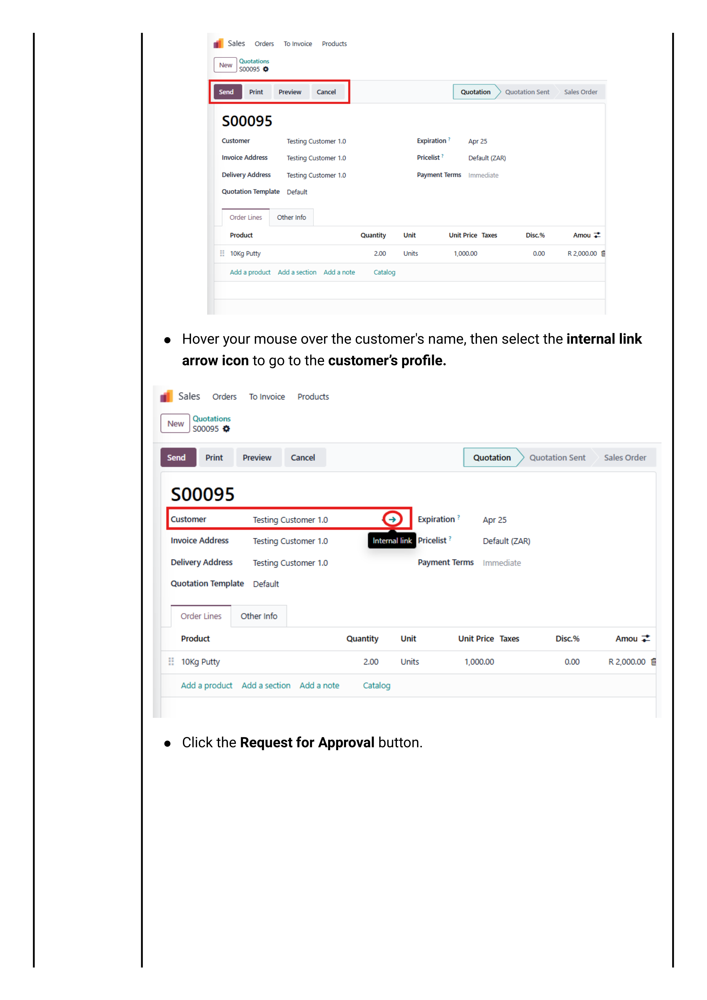
How Admin clears it: Login as Admin Olympic Paints → click the Activities icon (top bar) → open the customer-approval activity. On the customer record:
- Change Customer Status to Approved (credit partner) — or COD if cash-on-delivery only.
- Open the Accounting tab → tick Partner Limit → enter the credit limit amount.
- Click Save.
- On the chatter, mark the activity Done.
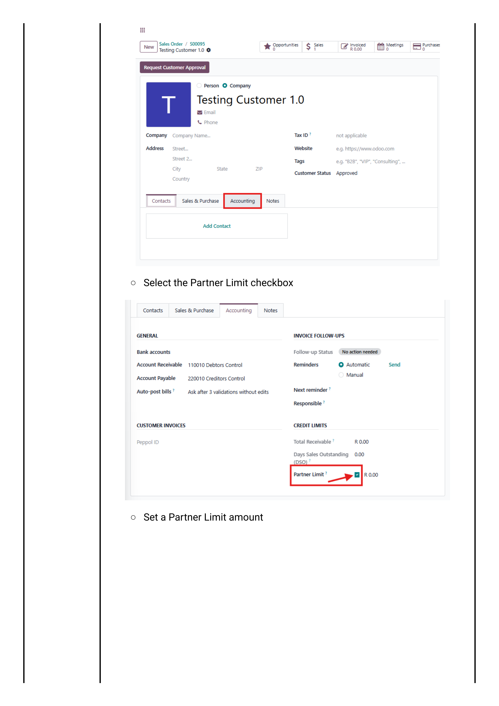
The salesperson can now reopen the quotation and click Confirm.
Approval 2 — Discount below rock-bottom price
Trigger: Salesperson sets a unit price below the product's rock-bottom and clicks Confirm.
An error message appears and an approval activity is logged to the Sales Manager (Kishan).
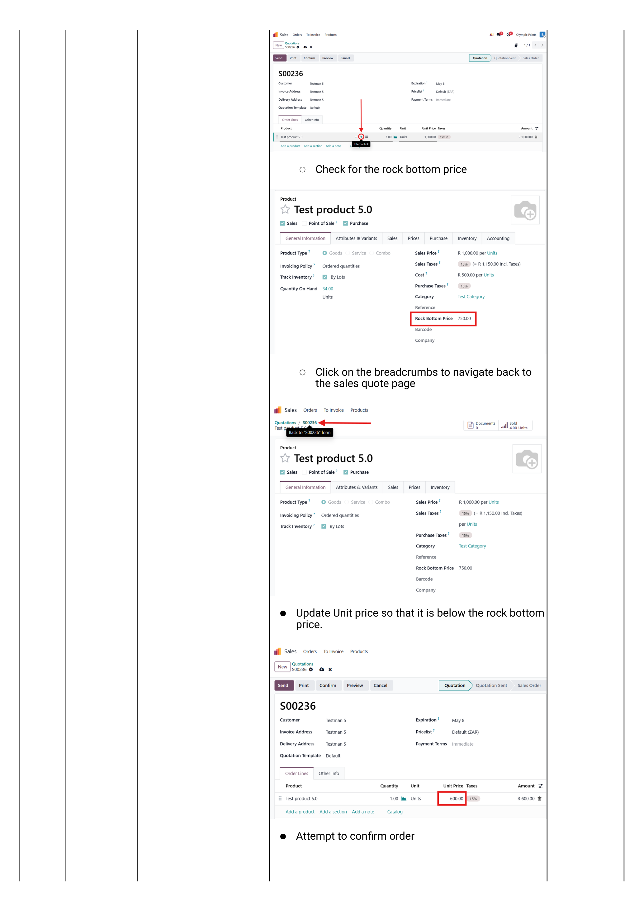
How Kishan clears it: Login as Kishan → click the notifications/activities icon → open the most recent Sales Order activity → on the quotation click Approve Discount. The order can now be confirmed.
Approval 3 — Sales order exceeds the customer's credit limit
Trigger: Sum of unpaid invoices + this order > the partner limit set on the customer's Accounting tab.
An approval-error message appears on Confirm, and activities are routed to Kishan and the Admin.
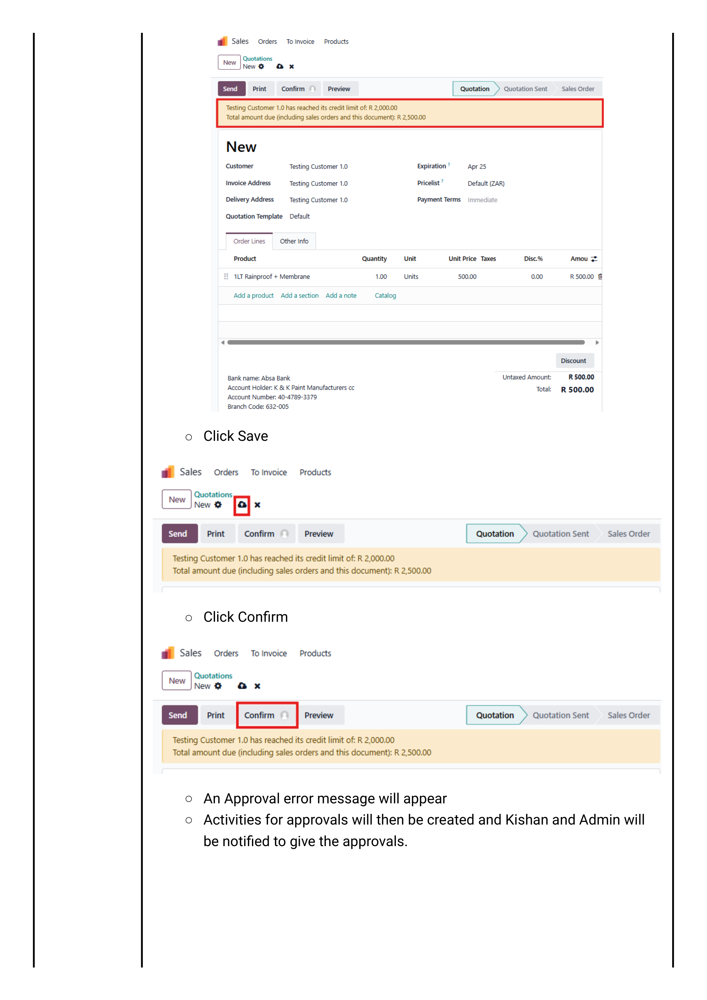
How Kishan / Admin clears it: Activities icon → Sales Order activity → click Confirm on the activity card. The order is now approved.
Odoo compares the partner limit against the total open receivables for that customer (open invoices + draft sales orders), not a single transaction. If the customer is at 95% of limit, even a small new order can trigger this gate.
Confirm & Fulfil
Quotation becomes Sales Order, Odoo auto-generates a delivery, the warehouse picks the stock and validates the delivery — stock levels decrement.
Confirm the quotation
Login as salesperson → open the quotation → click Confirm.
Odoo immediately:
- Converts the quotation reference (Q###) into a Sales Order (SO###).
- Creates a linked delivery order in the Inventory app.
- Reserves stock against on-hand quantity (if the Reserve rule is enabled on the warehouse).
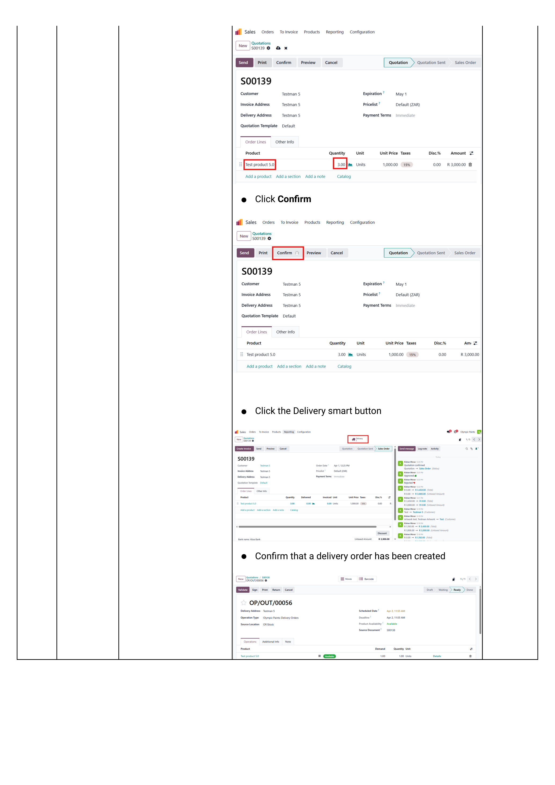
Inspect the auto-generated delivery
Click the Delivery smart button (top right of the SO). This jumps you to the linked WH/OUT/000… delivery record in the Inventory app.
The delivery has its own status flow: Draft → Ready → Done. At this point it is normally Ready if stock is available.
From this point a sales order branches into two delivery paths:
- Standard delivery — the delivery is added to a vehicle batch with a route, a driver, and a scheduled date. See Walkthrough 03 — Vehicle Scheduling.
- Customer collection — the customer is collecting from our premises; the delivery is validated at the counter when they arrive. See Walkthrough 02 — Customer Collection.
Pick the stock & validate the delivery
Login as Logistics Olympic Paints
Navigate to the Inventory app → Operations tab → Deliveries and open the relevant WH/OUT record.
- On each line, set the Done quantity to match what was physically picked. If a partial pick, set Done to the lower number — Odoo will offer a backorder for the balance.
- Click Validate.
- If quantities are partial, Odoo prompts: Create Backorder? — click Create Backorder to keep the remaining quantity as a new delivery in Ready status.

- Stock decrements in the source location (OP/Stock).
- Delivery status flips to Done.
- The Sales Order status changes to Delivered.
- An Invoice action becomes available on the SO.
Invoice & Collect
Create the customer invoice from the delivered Sales Order, send it for payment, and register the payment when it arrives.
Create the invoice from the Sales Order
Login as Accounts / Admin
Open the Sales Order (Sales app → Orders → Orders) and click Create Invoice.
Odoo offers three options on the popup:
| Option | When to use |
|---|---|
| Regular invoice | Standard — invoice for the quantities actually delivered. Pick this for almost every Olympic Paints sale. |
| Down payment (percentage) | If the customer pre-pays a % before delivery. Rarely used in our flow. |
| Down payment (fixed amount) | Pre-payment for a fixed rand amount. |
Pick Regular invoice → click Create and View Invoice. Odoo opens the draft invoice INV/####.
The invoicing step is not screenshot-covered in the sprint test cases. Once you walk this against the live Odoo environment, capture the Create Invoice popup and replace this placeholder.
Confirm and send the invoice
- On the draft invoice, review tax codes, due date and totals.
- Click Confirm — the invoice number is finalised and posts to the accounting ledger.
- Click Send & Print to email the PDF to the customer's billing contact. Body text can be edited before sending.
If the customer has been granted portal access (Sprint 2 TC1.8), the invoice is immediately visible on their portal and they can pay online. See Customer portal below for the portal setup procedure.
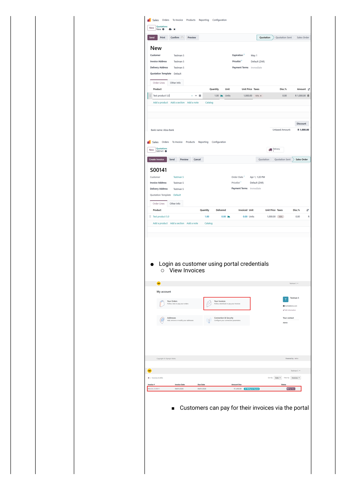
Register the payment
When the customer pays:
- Open the posted invoice.
- Click Register Payment.
- On the popup, confirm:
- Journal — Bank (or Petty Cash for cash payments).
- Amount — defaults to the full invoice; reduce for a partial payment.
- Payment Date.
- Memo — usually the EFT reference.
- Click Create Payment. The invoice flips to Paid (or Partial).
Capture the Register Payment popup as it appears in our environment.
Invoice paid → customer's open balance reduced → Sales Order shows Fully Invoiced & Paid. The whole record stays searchable in Sales → Orders.
Alternative entry points
Two ways to start a sales order other than typing it line-by-line.
Email order — import an Excel template
When a customer emails an order on the sales order template Excel sheet:
- Login as Quintus (or any sales user).
- Navigate Sales app → Quotations.
- Click the ⚙ gear icon → Import records.
- Click Upload Data File → select the Excel order from your computer.
- The Partner ID column must match a customer name already on the system. The price is entered manually per line.
- Click Test. If green, click Import.
The records appear as draft quotations. Open each one to verify the order lines, then proceed normally from Step 4 — Save.
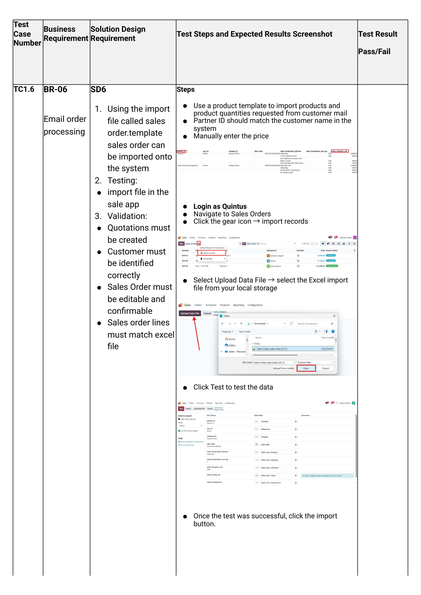
Customer portal — letting customers view & pay online
One-time setup per customer:
- Login as Wesley (Admin).
- Navigate Sales app → Orders → Customers → open the customer profile.
- Action menu → Grant portal access. This emails the customer an invitation to set a password.
- (Optional override:) Settings app → Manage Users → remove the Internal Users filter → open the customer record → Security tab → Change Password to set a password on their behalf.
Once active, the customer logs in to the Odoo portal and can:
- View their open invoices and pay them online.
- Accept or reject quotations sent to them.
- View order history.
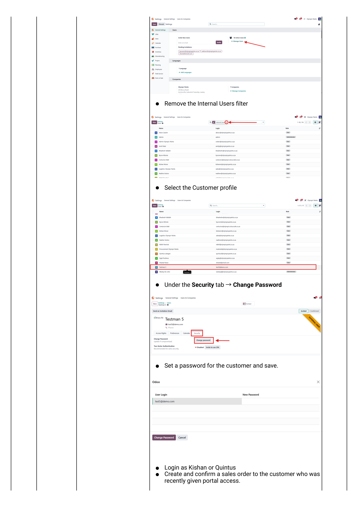